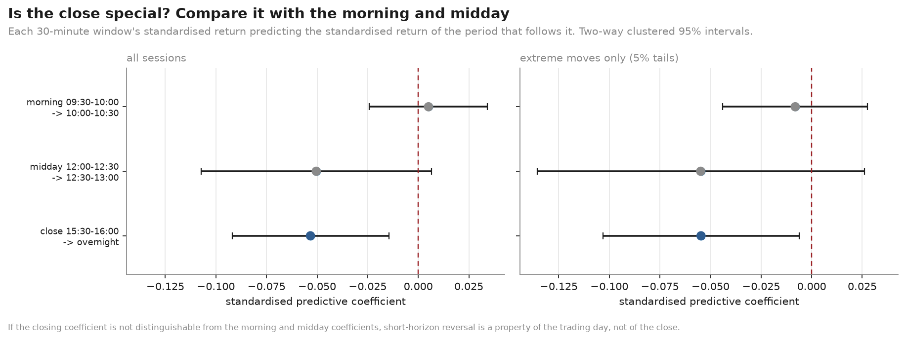
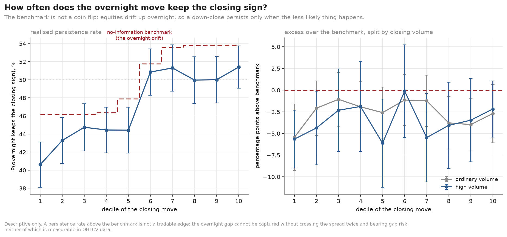
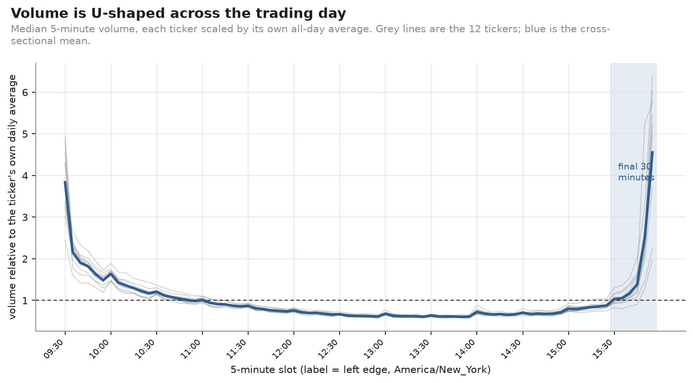
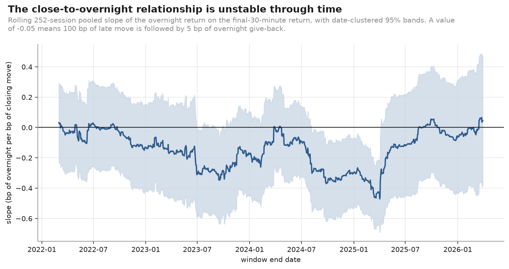

01
The close is busy. It isn't uniquely predictive.
This is the study's central falsification. Three non-overlapping 30-minute windows, each standardised within its own slot, each tested against the period that immediately follows it.

| Window | Predicts | β | 95% CI | t | n |
|---|---|---|---|---|---|
| 09:30–10:00 | 10:00–10:30 | +0.005 | [−0.024, +0.034] | 0.34 | 15,144 |
| 12:00–12:30 | 12:30–13:00 | −0.050 | [−0.107, +0.007] | −1.74 | 15,136 |
| 15:30–16:00 | overnight | −0.053 | [−0.092, −0.015] | −2.70 | 14,999 |
The closing coefficient is the only one significant on its own — and its point estimate (−0.053) sits almost on top of midday's (−0.050), with intervals that overlap almost entirely. The close's advantage is a tighter standard error, not a larger effect.
A reversal tendency of the same magnitude sits in the middle of the day, where there is no auction, no index rebalancing, no end-of-day mark and no overnight risk. Calling this a "closing bell effect" would attribute to the close something the midday session does just as much of.
02
Zero is the wrong benchmark
U.S. equities carry a positive unconditional overnight drift. Across all 14,958 eligible sessions the mean overnight return is +4.81 bp, and 54% of overnight returns are positive.
Every conditional overnight mean in this study is therefore reported as an excess over that drift, not against zero. Without the correction, an ordinary +7 bp overnight return following a strong up close reads as "persistence" when it is simply what an arbitrary session already earns.
The same correction applies to directional persistence. A naive 50% coin-flip reference makes ordinary market drift look predictively meaningful: with 54% of overnight returns positive, an up close "persists" 54% of the time under the null and a down close only 46% of the time.

03
The asymmetry: down closes partially reverse, up closes do nothing
Extreme closing pressure is the top or bottom 5% of each ticker's own trailing distribution — 1,974 events, mean absolute closing move 77 bp.
| Direction | Closing volume | n | Mean close₃₀ | Mean overnight | Excess over drift | 95% CI | p |
|---|---|---|---|---|---|---|---|
| baseline (all eligible) | — | 14,958 | −0.2 bp | +4.81 bp | — | — | — |
| strong up | high | 625 | +83.8 bp | +7.21 bp | +2.41 bp | [−17.0, +22.1] | 0.81 |
| strong up | ordinary | 391 | +58.8 bp | +2.87 bp | −1.94 bp | [−17.6, +13.6] | 0.79 |
| strong down | high | 611 | −85.5 bp | +29.34 bp | +24.53 bp | [+2.8, +45.5] | 0.027 |
| strong down | ordinary | 347 | −69.6 bp | +18.01 bp | +13.20 bp | [−7.3, +33.0] | 0.21 |
| Intervals are block-bootstrap resampled over whole trading dates. | |||||||
Strong up closes are uninformative. Both cells sit within 3 bp of the unconditional drift, with intervals spanning zero. An 84 bp surge into the close tells you nothing a coin toss would not.
Strong down closes partially reverse, recovering roughly a quarter to a third of the closing decline before the next session opens.
This is a conditional mean, not a strategy. Within those 611 events the overnight standard deviation is 166 bp — about six times the mean — and capturing it would require crossing the spread twice while carrying unhedged overnight gap risk. Neither cost is measurable in this dataset.
04
Does closing volume help? No.
This was the sharpest part of the question, and the answer is a null result.
| Direction | High volume | Ordinary | Difference | 95% CI | p |
|---|---|---|---|---|---|
| strong up | +7.2 bp | +2.9 bp | +4.4 bp | [−17.7, +27.4] | 0.69 |
| strong down | +29.3 bp | +18.0 bp | +11.3 bp | [−16.4, +38.6] | 0.40 |
Not one contrast clears conventional significance at any horizon. The panel regression agrees from the other direction — the interaction between the closing move and abnormal closing volume is about as close to a precise zero as this data produces:
R_overnight = α_i + β₁·R_close + β₂·AVOL + β₃·(R_close × AVOL) + γX + ε β₃ = −0.0061 t = −0.06
The point estimates lean toward heavier volume meaning more reversal after down closes — the opposite of a "conviction" reading — but with p = 0.40 that direction is not supported either.
05
Where trading concentrates ≠ where direction becomes predictable
The descriptive microstructure result is strong, and worth keeping strictly separate from the predictive one.

Order flow concentrates near the close far more strongly than price movement does. The final 30 minutes carry a median 21% of regular-hours volume (11% for TSLA to 31% for JPM), of which the closing auction alone is a median 7% — while being roughly average in volatility for the day.
That gap is a clean descriptive finding about liquidity. It is not evidence of predictability, and the sections above show it does not become one.
06
The small relationship is not stable through time

The rolling slope runs from +0.066 to −0.471. It is near zero through 2021–2022, strongly negative from mid-2023 into early 2025, and back near zero by the end of the sample. For most of the window the confidence band includes zero. A full-sample point estimate averages over regimes that look genuinely different.
Explanatory power is very low
Directional discrimination is modest even in-sample and was not developed into a trading model. The p-values are not the point; the magnitudes are.
07
Data quality
Genuine 1-minute consolidated U.S. equity bars, aggregated to 5-minute regular-hours bars
in America/New_York on the XNYS exchange calendar, then cross-validated
against an independent daily vendor after undoing that vendor's split adjustment.
| Measure | Result |
|---|---|
| Median absolute closing-price discrepancy | 0.0 – 1.0 bp |
| 99th-percentile closing discrepancy | 5.4 – 24.8 bp |
| Sessions disagreeing by more than 50 bp | 2 – 5 |
| Volume reconciliation | 86.0 – 95.4% |
The sources do not match perfectly, and the volume figure is not expected to reach 100%: vendor daily volume includes pre- and post-market trading that the regular-hours panel excludes by construction. The 5–14% shortfall is that extended-hours activity.
Three real data problems, found and handled
Each is caught by an automated check that remains active in the pipeline.
Symbol identity around the Facebook/Meta rename
Facebook traded as FB until 2022-06-08 and as META afterwards,
but the symbol META was already in use by an unrelated issuer trading near
$15 while Facebook traded near $370. Renaming FB → META without fencing the
alias in both directions interleaves two issuers' histories inside the same
bars and produces overnight returns above +2,000%. The alias is now date-fenced both
ways, and a generic session-range guard rejects any session spanning more than 50%
regardless of which symbol was reused.
The 2023-01-24 NYSE opening-auction malfunction
A documented exchange malfunction produced erroneous opening prints, later busted, which survive in tape data. A bar-level range guard of 15% sits inside a wide empirical gap: the three worst bars in the sample span 18–28% within five minutes, while the widest genuine bar — the 2025-04-07 reversal — spans 9.6%.
Missing closing auctions for XOM
For much of 2021–2024 the bar stamped at 16:00 for XOM contains a stray one-share print rather than the closing auction. Taking its price as the official close would put a meaningless tick at the end of the closing window, and counting its volume as auction volume would understate closing activity by orders of magnitude. The closing bar is now accepted as an auction only if it is at least 0.5% of regular-hours volume — far below any genuine auction (1.5–20%) and far above any stray print.
08
Limitations
The mechanism is not observed. OHLCV bars contain prices and share counts. They do not contain bid-ask spreads, quoted depth, signed order flow, dealer inventory, or closing-auction imbalance — and none of these is fabricated, estimated or proxied anywhere in this study. Liquidity provision, index rebalancing and informed trading are all consistent with what was found and cannot be distinguished with this data. They remain hypotheses, never findings.
- In-sample estimation. No hold-out period and no walk-forward validation. The study is free of look-ahead bias, which is a weaker claim than out-of-sample validity.
- Cross-sectional dependence. Twelve highly correlated mega-caps is effectively far fewer than twelve independent series; the effective sample is closer to 1,316 dates than to 14,958 observations.
- Multiple comparisons. Four outcome horizons, two tail definitions, seven regime variables and a specification ladder. The regime results in particular are exploratory.
- Sample. Twelve mega-cap names over five years and one quarter, spanning an unusual macro sequence. Findings may not extend to smaller or less liquid names, or to other periods.
Leakage controls
Every event flag is built from strictly earlier sessions; the current session is never part of its own reference distribution. The claim is tested rather than asserted — the pipeline is run on the full sample and on a truncated sample, and every event classification on the overlap must be byte-identical. A companion test confirms the check is not vacuous by verifying the poisoned future would in fact have been detected.